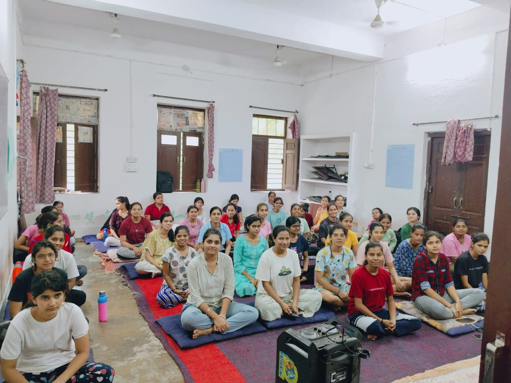
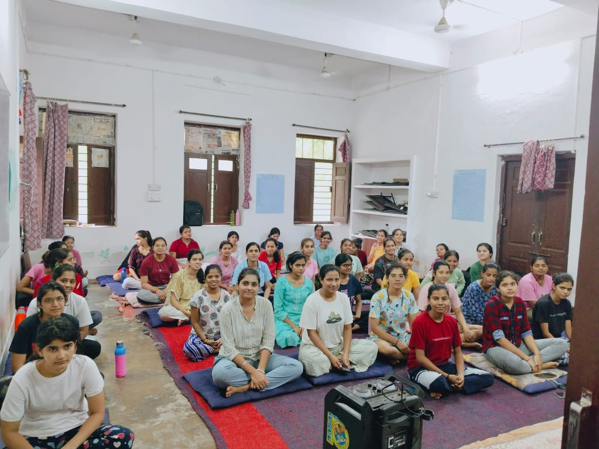

Abhilasha Campus Council Selection Process Changes:-
This year, Abhilasha Campus introduced a new council selection process, shifting from the traditional voting system to an interview-based approach. The decision was implemented to ensure that the most capable and dedicated candidates are chosen for leadership roles in the campus councils.
The council results have been announced, with several key positions filled through this new process. Bibhu has been appointed as the DISCO (Disciplinary Officer), taking on the most prominent leadership role. Alongside Bibhu, Deepika has been selected as the Academic Head, Urmila Teli as the Training and Placement (TNP) officer, Vinita as the IT Head, and Archana has taken on the role of Health Wizard.
This change in the selection process was aimed at giving deserving candidates an equal opportunity to showcase their skills and leadership potential through interviews. "The new system allows us to assess a candidate's capabilities more deeply, ensuring that the council is composed of individuals who can truly contribute to the development of the campus," said a faculty member.
The newly appointed council members are eager to take on their roles and work towards enhancing campus life. Each member will be responsible for their respective areas, aiming to bring innovation and growth to Abhilasha Campus.
 Archana (Health Wizard)
Archana (Health Wizard)
 Hemlatha (Placement Wizard)
Hemlatha (Placement Wizard)